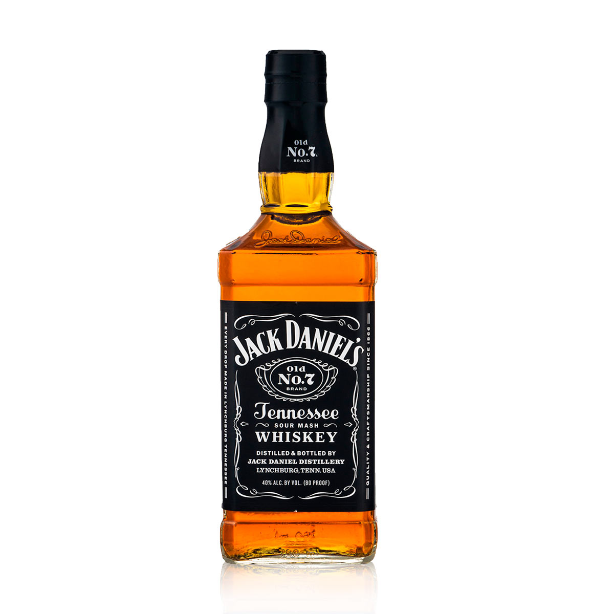

Jack Daniel's, el whisky de Tennessee desde 1866, famoso por su sabor único
y proceso de destilación especial. Un ícono del bourbon, reconocido globalmente por su calidad.

Red Label es una marca de whisky escocés producida por Johnnie Walker,
con una historia que se remonta a 1820. Reconocido por su mezcla audaz y su carácter distintivo.

Label 5 es una marca de whisky escocés que se destaca por su suavidad y
equilibrio. Con una historia que se remonta a 1938, Label 5 ha ganado reconocimiento por su calidad y asequibilidad.
Grant's es una marca escocesa de whisky conocida por su suavidad y calidad desde
1887. Con una mezcla única de maltas y granos seleccionados, ofrece un perfil de sabor equilibrado y aromas sutiles.